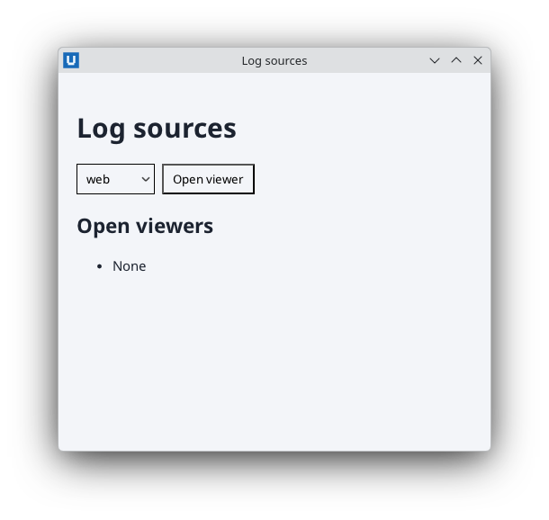

Use multiple windows¶
Goal: open more windows from one application, keep track of them, and close them together.
- Every
app.open_html(...)/New-NativeHTMLKitWindowcreates another native window with its own document. Subscribe to events on that window's document, not the first one. window.request_close()/Close-NativeHTMLKitWindowasks the host to close a window. The close can be vetoed by a policy set withwindow.on_before_close(callback)/Set-NativeHTMLKitBeforeClose(return true to allow).app.on_window_event(callback)/Register-NativeHTMLKitNotification -Method window.eventreportsclose_requested,closed,resized,focusedand other window events. When a window is closed its handles are retired by the SDK first.- The application ends when its last window closes. For that last window, Core 1.0.x sends no
closedevent: the application shutdown follows directly (yourapp.run()/Wait-NativeHTMLKit -UntilShutdownreturns). - An app may open up to 16 windows by default (
max_windows/-MaxWindowswhen starting).
Example: one viewer window per log source¶
examples/howto/python/log_windows.py
"""Log windows: open a viewer window per log source and keep track of them from the main window.
Teaches: app.open_html() for more windows, a separate Document per window, request_close(),
on_window_event() to notice a window that the user closed, and on_before_close() on the main
window to close the viewers along with it.
Run: python log_windows.py
Guide: docs/how-to/multiple-windows.md
"""
import html
import itertools
from nativehtmlkit import Application
SOURCES = {
"web": ["GET / 200 12ms", "GET /login 200 9ms", "POST /login 302 41ms", "GET /admin 403 3ms"],
"worker": ["job 41 started", "job 41 finished in 2.1s", "job 42 started", "job 42 failed: timeout"],
"mail": ["queued 3 messages", "delivered <alerts@example.org>", "retrying 1 message"],
}
MAIN = """<!doctype html>
<html lang="en"><head><meta charset="utf-8"><style>
body { font: 15px sans-serif; margin: 0; padding: 20px; background: #f3f5f9; color: #1c2330; }
form { display: flex; gap: 8px; margin-bottom: 14px; }
select, button { padding: 6px 10px; }
li { margin: 4px 0; }
</style></head>
<body>
<h1>Log sources</h1>
<form id="open-form">
<select id="source" aria-label="Log source">%s</select>
<button id="open">Open viewer</button>
</form>
<h2>Open viewers</h2>
<ul id="viewers"><li>None</li></ul>
</body></html>"""
VIEWER = """<!doctype html>
<html lang="en"><head><meta charset="utf-8"><style>
body { font: 13px monospace; margin: 0; padding: 14px; background: #101418; color: #d9e1ea; }
h1 { font: 600 16px sans-serif; }
button { font: 14px sans-serif; padding: 6px 10px; }
</style></head>
<body><h1 id="title"></h1><ol id="lines"></ol><button id="close">Close viewer</button></body></html>"""
def main():
with Application.start(name="Log windows") as app:
options = "".join(f'<option value="{k}">{k}</option>' for k in SOURCES)
main_window = app.open_html(MAIN % options, title="Log sources", width=480, height=420)
doc = main_window.document
viewers = {} # window id -> (window, label)
numbers = itertools.count(1)
def show_viewers():
items = [f"<li>{html.escape(label)}</li>" for _, label in viewers.values()]
doc.replace_html("viewers", "".join(items) or "<li>None</li>")
def open_viewer(_event):
source = doc.get_value("source")
label = f"{source} #{next(numbers)}"
viewer = app.open_html(VIEWER, title=f"Log: {label}", width=520, height=360)
viewer.document.set_text("title", f"Log: {label}")
viewer.document.replace_html("lines", "".join(f"<li>{html.escape(line)}</li>" for line in SOURCES[source]))
# Each window has its own document; this handler belongs to the viewer's document.
viewer.document.on("click", lambda _e: viewer.request_close(), element="close")
viewers[viewer.id] = (viewer, label)
show_viewers()
def window_event(params):
# The SDK has already retired a closed window; drop it from our list too.
if params["type"] == "closed" and viewers.pop(params["window_id"], None) and not main_window.closed:
show_viewers()
def closing_main():
for viewer, _ in list(viewers.values()):
if not viewer.closed:
viewer.request_close()
return True # allow the main window to close
doc.on("submit", open_viewer, element="open-form")
app.on_window_event(window_event)
main_window.on_before_close(closing_main)
app.run()
if __name__ == "__main__":
main()

Real capture on KDE Plasma 6.6 Wayland with Core 1.0.3 and Python SDK 0.1.2.
- The viewer's Close button is handled on the viewer's document.
window_eventremoves a viewer from the list when the user closes it with the window's own close button.on_before_closeon the main window closes the viewers too, then allows the main window to close, which ends the application.
PowerShell¶
The same building blocks: New-NativeHTMLKitWindow + Open-NativeHTMLKitHtml per window, Get-NativeHTMLKitWindowList, Close-NativeHTMLKitWindow, Set-NativeHTMLKitBeforeClose, and Register-NativeHTMLKitNotification -Method window.event for window events. The PowerShell SDK gallery opens a second window from a button.
UI libraries¶
A UI object owns one window. Open further windows with the SDK next to it, or create and mount a second UI object.